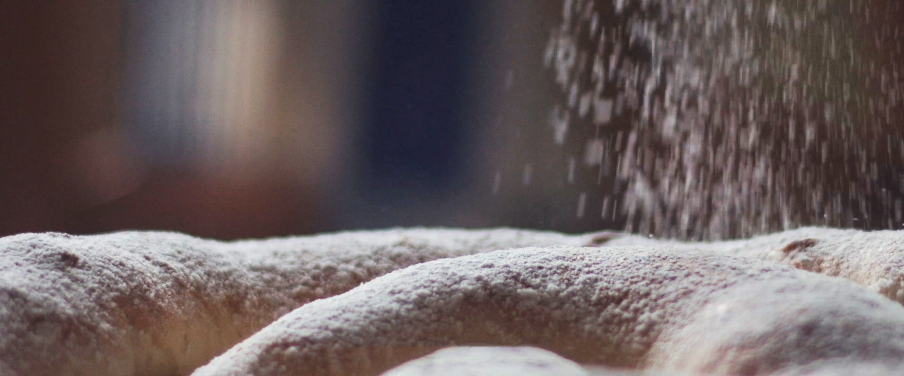
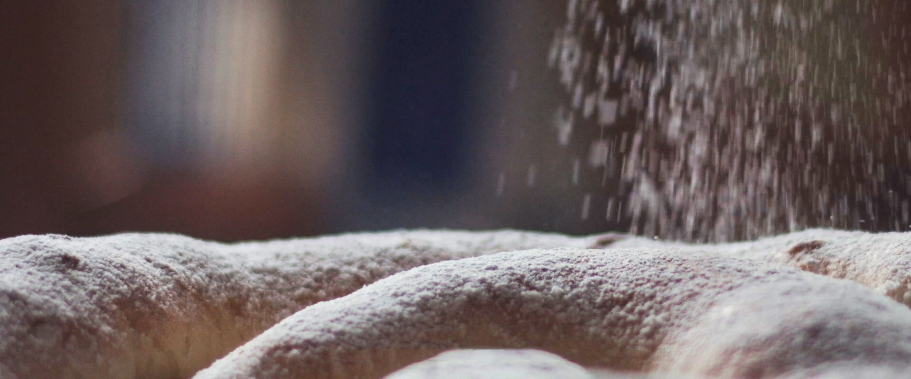
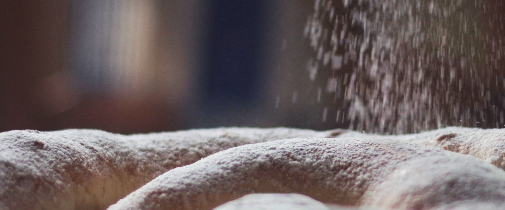

Com de grossa la vols? Sa normal és més o menys com un vinil i sa grossa són uns 15 cm extra de diàmetre.
Ous: com són de grossos?
Temperatura ambient
Nivell d'experiència
D'on ets?
De què la vols?
La vols fer vegana?
Que necessites?
#
Ingredients
Quantitat
Ratio
1
Sucre
150 g
0,5 Tassó
2
Ous
2
-
3
Farina de força
500 g
2,5 Tassons
4
Aigua
160 ml
0,5 Tassó
6
Llevadura fresca
25 g
-
7
Oli de girasol
Per untar ses mans
-
8
Saïm
A voler
-
9
Sucre en pols
A voler
-
Preparació
Temps de preparació: ~ 4h
Temps de forn: 10 - 15 min
Eines: Taula grossa, rodillo, bol gros, turmix, colador, forn, llauna rodona,
paper de forn.
PAS 1:
Descongelar el llevat fresc del tot, després desfer-lo en un bol amb els ML
d'aigua tèbia que hem preparat. Afegir
OUS. Mesclar amb
el túrmix fins que faci espuma.
PAS 2:
Lentament, anar afegint farina amb una mà, mentre l'altra va mesclant. Quan la pasta tingui una mica de
consistència, abans d'abocar tota la farina, unta't la mà amb oli de gira-sol, les vegades que faci falta,
perquè no s'aferri tant la pasta.
[1] Si no li poses ous, amb compensar amb aigua és suficient, uns 40 ml d'aigua per ou. Ja està calculat al
quadre d'ingredients.
[2] Si els ous són molt petits, amb menys farina serà suficient. Mirar que la pasta no quedi massa eixuta.
[3] Si els ous són molt grans, farà falta més farina. Mirar que la pasta no quedi massa tova.
[4] No t'allunyis molt de les quantitats indicades, ja que l'equilibri farina-aigua-sucre és important.
[5] Si la pasta s'aferra molt a les mans, unta-te-les amb oli de girasol. Repeteix les vegades que faci
falta.
PAS 3:
Acabar d'abocar la farina i pastar fins que tingui consistència, però sense que quedi molt ferma. Si
afegeixes
massa farina, banya't les mans amb aigua i pasta, així s'afegeix humitat a la pasta. Repeteix fins que
estigui
bé.
PAS 4:
Tapa-la amb un pedaç humit i deixa-la al forn (apagat) fins que s'hagi duplicat en mida. Si estas en un
entorn càlid i humit, amb tapar-la és suficient.
[6] En cas que faci fred o la pasta no tovi, posar un tassó amb aigua bullent dins el forn, per afegir
humitat i temperatura. En general vols evitar que la pasta estigui en un lloc fred.
[7] Assegura't que està tapada i no exposada a la circulació d'aire. Si s'asseca li costarà tovar.
PAS 5:
Quan la pasta hagi tovat, pastar-la de nou.
Repeteix el PAS 4 i 5 unes quantes vegades, depenent del temps que tinguis. Mínim tovar 2 vegades.
[8] Si vols tenir l'ensaïmada feta a l'hora de dinar, es recomana posar-s'hi la tarda abans i fer tots els
passos fins al 5 durant el capvespre. Així a la nit ja estarà llesta per al pas 6.
PAS 6:
Unta tota la taula amb oli de gira-sol. Divideix la pasta en dues meitats.
Amb un rodillo, estira bé la primera meitat de la pasta fins que estigui ben fina, creant un rectangle el
més
regular possible. Després, estira manualment la tela de la pasta perquè sigui tan fina com sigui possible.
Si la pasta ha quedat perfecta, hauries d'aconseguir que es transparenti una mica. Si es forada, no passa
res. En
cas que es foradi molt, no estirar més.
La pasta ideal és: Rectangular, molt fina (1-2 mm), sense forats, una mica transparent i flexible.
Normalment,
no és possible que sigui perfecta, però acostar-s'hi el màxim és clau perquè surti bona.
[9] Si et queden unes voreres molt gruixades, foradades o una forma molt allunyada d'un oval/rectangle, pots
agafar un ganivet i perfilar la tela.
[10] La pasta sobrant la pots guardar, deixar-la tovar i coure-la al forn després quan facis l'ensaïmada.
També és bona.
PAS 7:
Untar la pasta estirada amb saïm. A gust de cadascú, no ha d'estar totalment coberta. En general amb una
pinzellada generosa de saïm cada 3-5 cm, és suficient. Això cadascú ha de trobar el seu punt.
PAS 8:
Enrotllar la pasta. Començant pel costat llarg més "perjudicat" enrotllarem el rectangle de pasta
delicadament
fent un xurro allargat. Col·loquem aquest xurro al centre de la llauna amb paper de forn, en forma
d'espiral.
Tingues en compte que encara falta la meitat de l'ensaïmada, que es fa en dues parts.
[11] L'ensaïmada vegana es fa amb oli en lloc de saïm. És recomanable amb oli de gira-sol, però si ho
prefereixes, amb oli d'oliva també funciona. És important untar-la generosament.
[12] Ara és el moment de farcir-la. Sense abusar, al llarg d'un dels dos costats, fes una tira llarga del
teu farciment deixant un marge d'uns tres centímetres. La tira, que no sigui més gruixada que un dit. Quan
la enrotllis, comença per aquest costat i ves amb molt de compte de mantenir la uniformitat del farciment.
Personalment, no em complicaria la vida i la faria llisa, però tu mateix…
[13] Si estàs fet un masterxef, abans de col·locar el xurro dins la llauna, agafa'l per un extrem i
delicadament deixa'l penjar verticalment. Amb l'altra mà, amb cura de no treure tot l'oli/saïm que has posat
a dins, estira'l fins que sigui un terç més llarg.
PAS 9:
Agafa la segona meitat de la pasta i repeteix els passos 6, 7 i 8.
[14] No t'oblidis de posar oli a la taula de nou.
PAS 10:
Un cop està l'espiral completa, amb un bon marge al voltant del xurro, esquitxa lleugerament l'ensaïmada amb
aigua, com si la bategessis. Col·loca-la al forn apagat a tovar.
[15] Igual que abans, si fa fred, hi ha poca humitat o li costa pujar, posa un got amb aigua bullent a dins
del forn.
[16] Si fa molt de fred, pots encendre el forn 5 minuts abans de posar l'ensaïmada perquè estigui a una
temperatura ambient semblant a l'estiu. Has de poder tocar el forn còmodament sense cremar-te.
PAS 11:
Deixa que tovi fins que el xurro no tingui forats dins l'espiral i ompli la llauna.
[17] Si veus que la pasta et tova molt ràpidament, em sap greu dir-t'ho, però hauràs de posar-te un
despertador a les 5 h màxim després del pas 10. Mirar si està ja completament estesa i inflada dins la
llauna i passar al pas 12. En cas que no hi estigui, pots tornar a dormir fins al matí.
PAS 12:
Retira l'ensaïmada del forn. Engega el forn a 200 °C de dalt i de baix, sense ventilador. Quan estigui
calent
del tot, baixa a 180 °C i posa l'ensaïmada a baix de tot. Enforna 10-12 minuts. Si és grossa i el forn és
fluix,
pots deixar màxim fins a 15 minuts. Els últims 2-3 minuts pots posar només a baix, si t'agrada la base
torrada.
Vigila constantment el color de dalt que no es cremi. Passats els 10 minuts, vigila també a baix que no
estigui
massa crua o cremada.
[18] Tingues en compte que dins el forn sembla més cuita del que és en realitat.
[19] Si és grossa i el forn és fluix, pots deixar màxim fins a 15 minuts. Els últims 2-3 minuts pots posar
només a baix, si t'agrada la base torrada.
[20] Vigila constantment el color de dalt que no es cremi. Passats els 10 minuts, vigila també a baix que no
estigui massa crua o cremada.
PAS 13:
Un cop estigui del tot cuita, treu-la i deixa que reposi en un lloc ben ventilat. Abans de servir, cobreix-la
completament amb sucre en pols.

[21] És bona amb gelat, xocolata desfeta i altres coses parescudes.
[22] Quan encara és calenta, no la tapis molt. Deixa que s'eixugui bé primer. Un pedaç / tela fina va bé.
[23] No li posis el sucre en pols quan encara és calenta.
Consells:
[24] No siguis dominguero, no la tallis com una pizza, agafa seccions de l'espiral de la mida que vulguis.
[25] No intentis anar de llest i farcir-la de coses. Te la carregaràs. Menja-ho junt amb el que vulguis i ja
està… Llisa és més bona!
[26] Si no te l'acabes, tapa-la amb una tela i no s'assecarà tant. Quan estigui molt seca, menja-la amb
coses humides (llet, gelat, iogurt…)
[27] Pots comprar capses per transportar-la a la majoria de forns.
[28] Si és per regalar a gent que li és igual tot, compra-la a l'aeroport i que els bombin, no ho notaran i
t'estalvies embrutar moltes coses.


 
